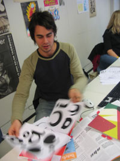

Pietari Posti pietari.posti@lpt.fi
Font: Creature Farm

Monday 24 January
nature
how they react to other creature
letters could be different kind of species if you type two letters and they get to close they react someway:
- hiding
- camouflage (to another letter)
- morphing
- runaway
- attack
- passive
text starts to live
two categories predators vegetarians different kinds of predators interact also (predators eat predators)
reactions between letters
no idea yet on how the shapes would look like. probably like real-life creatures.
you have to learn how the different characters react.
REACTIONS lucas: darwin theory, evolution theory, ant hill (aunt hillary) formal
Tuesday 25 January
The main task today was to seperate the predator shapes from the vegetarians. I'm not trying to make them look like animals (I hate those fonts!), but to have a more abstract representation (without actual wings).
The current formal idea is that vegetarians are round while predators have more spikes. Oh, and I like fat fonts. It has to be a usable font, so that it looks good when typing.

When thinking about the presentation, letters could go even further and develop "skills".
There are still a lot of things to figure out: what to do about how fish and birds work? Who is at the top of the food chain? ("the king"?)
REACTIONS: * Lucas: usually it's way too early to show a visual idea. It can be usable, but very experimental at the same time. Little time, much fun. * Eileen: Specific animal == specific letter? * Dennis: There could be more extreme differences in the form.
Wednesday 26 January
 |
I am working around abstracting the predator and vegetarian shapes. I'm pretty happy with the vegetarian shapes (some letters, like the o, still have a hint of an animal in them), but the predator shapes look a bit too thin (as Tom said, "starved"). Right now, it's a designer problem: designing the correct letterforms, and making them look good. |


Friday 26 January
Creatures
Quite playful font.
Finally it is about playing with the font. mot for body text. headlines.
Very heavy (likes fat fonts)
Still, yesterday morning I was going in a different direction with the font, more loose lines.
Some characteristics.
ö -> ä ->
Same forms in every letter.
they don't look to much like animals, just to give some hints.
can't decide the predators/ vegetarians. Some are pretty clear but others haven't decided yet.
Colon/dots are carrots.
Looking forward to next week to really start to play with them.
Monday 31 January
Presentation to be interactive like a game. You have some kind of area where you have a playground. You type some letters, and when you press the enter key, you let them do their thing.
Interaction is limited to the starting conditions. While they are moving you can type in more.
There have to be instructions which characters are what, and make some decisions about the rules. (which ones are the good guys and which ones are the bad guys)
The basic principle works like John Conway's Game of life.